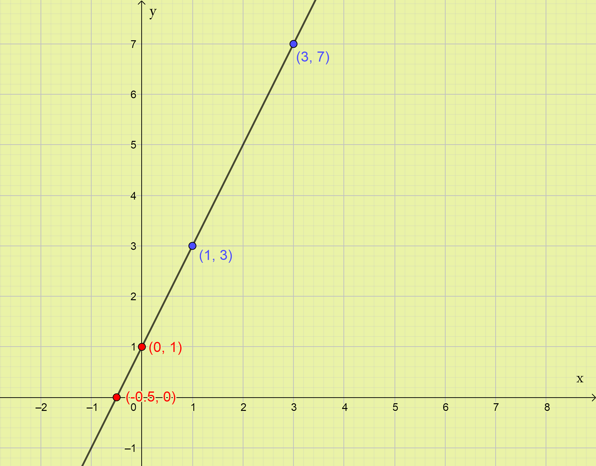
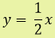
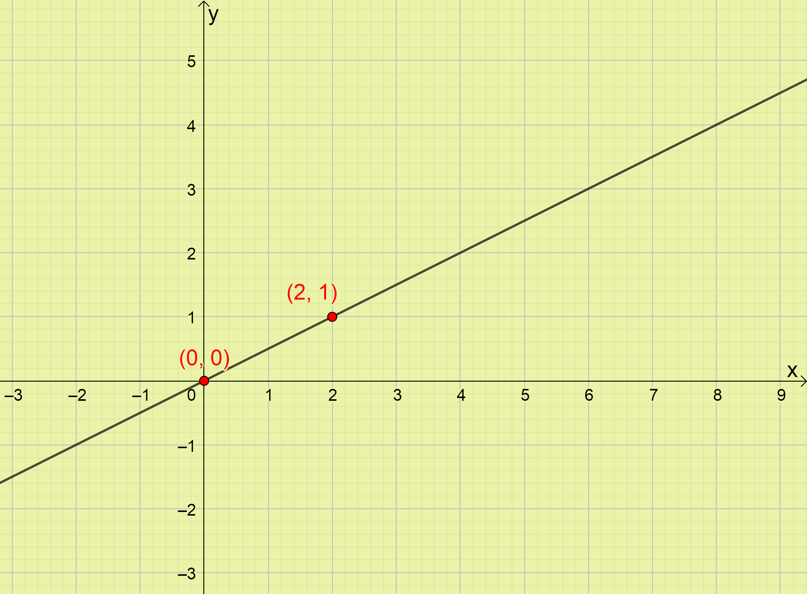
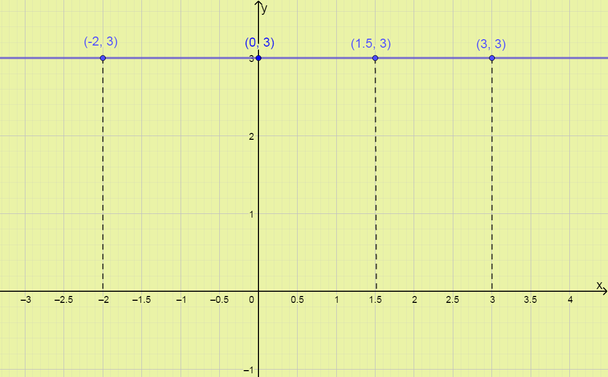

La función que a cada x ∈ R se le hace corresponder el número real f (x) = mx + n, donde m y n son números reales dados, se denomina función lineal. También se puede escribir y = mx + n
Los números reales (R) abarcan toda la recta numérica sin dejar huecos o espacios y los estudiarás en semanas posteriores.
Importa aceptar ahora que el máximo dominio conocido, los racionales son un subconjunto de los números reales (Q⊂R) lo que significa que todos los números racionales son reales y forman parte del dominio de la función lineal.
m → Se denomina pendiente.
n → Se denomina término independiente.
x → Variable independiente.
y → Variable dependiente.
Ejemplos de función lineal
a) y = 3x + 6 función lineal donde m = 3 y n = 6
b) y = 4x función lineal donde m = 4 y n = 0
c) s = 16t función lineal de la Física, donde la distancia (variable dependiente) se expresa en función del tiempo (variable independiente) y la velocidad es constante (v = 16 m/s), esto sucede en el movimiento rectilíneo uniforme (MRU).
d) función lineal que relaciona grados Fahrenheit (variable independiente) y grados Celsius (variable dependiente).
e) f(x) = 3 función lineal donde m = 0 y n = 3. A este tipo de función lineal de la forma y = n donde m = 0 también se le denomina función constante.
Importante: En la función lineal y = mx + n la variable independiente (x) es lineal, lo que significa que está elevada a la uno, su exponente es uno.
Ejemplo de funciones que no son lineales (Se estudiarán en años posteriores):
si tenemos una función que la variable independiente este elevada a otro exponente (y = x2+5) no es lineal,
si la variable independiente está como exponente de una potencia (y = 2x - 4) no es lineal,
si la variable independiente está en el denominador de una fracción () no es lineal,
si la variable independiente está bajo un radical () no es lineal.
Representación gráfica de relaciones
En primero básico estudiaste la representación de puntos o pares ordenados (x; y) en el plano cartesiano, aspecto recordado en la sección Conocimientos necesarios.
Este conocimiento resulta imprescindible para representar gráficamente relaciones y funciones.
Comencemos con un ejemplo de una relación que no es función.
La correspondencia que a cada número natural entre 2 y 10 le hace corresponder sus divisores.
Como podemos notar, el conjunto de partida está constituido por los números 3, 4, 5, 6, 7, 8 y 9.
Analicemos ahora los divisores de cada uno de estos números, los cuales constituyen el conjunto de llegada.
Recordemos que todo número es divisible por 1 y por el propio número, por lo que para todos los casos estos serán divisores.
Al 3 lo dividen el 1 y el propio 3. Pues es un número primo.
Al 4 lo dividen el 1, el propio 4 y además, el 2.
Al 5 lo dividen el 1 y el propio 5. Pues es un número primo.
Al 6 lo dividen el 1, el propio 6 y además, el 2 y el 3.
Al 4 lo dividen el 1, el propio 4 y además, el 2.
Al 7 lo dividen el 1 y el propio 7. Pues es un número primo.
Al 8 lo dividen el 1, el propio 8, el 2 y el 4.
Al 9 lo dividen el 1, el propio 9 y el 3.
Por lo tanto el conjunto de llegada está constituido por los divisores de los números que forman el conjunto de partida sin repetirse ninguno de ellos.
¿Qué significa sin repetirse? Por ejemplo el 1 divide a todos los números del conjunto de partida, sin embargo debe aparecer en el conjunto de llegada solo una vez, pues no tiene sentido repetir un número en un conjunto, si este ya existe en dicho conjunto.
El conjunto de llegada está formado por los números 1, 2, 3, 4, 5, 6, 7, 8 y 9.
Si lo representamos en un diagrama de Venn queda como se muestra en la figura 1.
Si lo representamos en el plano cartesiano (figura 2) debemos tener claros los puntos que forman esta relación. Asumiendo como x los elementos del conjunto de partida y como y los del conjunto de llegada, quedaría:
Para x = 3 tenemos los pares (3; 1) y (3; 3).
Para x = 4 tenemos los pares (4; 1), (4; 4) y (4; 2).
Para x = 5 tenemos los pares (5; 1) y (5; 5).
Para x = 6 tenemos los pares (6; 1), (6; 6), (6; 2) y (6; 3).
Para x = 7 tenemos los pares (7; 1) y (7; 7).
Para x = 8 tenemos los pares (8; 1), (8; 8) y (8; 4).
Para x = 9 tenemos los pares (9; 1), (9; 9) y (9, 3).
Figura 1
Figura 2
Representación gráfica de funciones lineales
Ya sabes que el conjunto formado por los elementos del dominio de una función y sus respectivas imágenes, se pueden interpretar como las coordenadas de los puntos de un plano. Al conjunto de puntos que se obtiene al dar todos los valores posibles a la variable independiente x, se le llama gráfica de la función.
Como lo indica el nombre de la función (lineal) su gráfico es una línea recta.
En grados anteriores estudiaste en temas de geometría que dos puntos determinan una y solo una recta.
Pues precisamente para representar una función lineal basta tener 2 puntos que pertenezcan a esta.
¿Cómo determinamos estos puntos?
En la definición de función se indica que el dominio de esta son todos los valores reales de x, y como se aclara que todos los números conocido hasta ahora, dígase los racionales (Q), pertenecen a los reales, podemos afirmar que los racionales también son parte del dominio de la función lineal.
Tomando la función lineal general y = mx + n basta asignarle valores del dominio de la función a la variable independiente x para obtener su imagen (valor de la variable dependiente y que le corresponde).
Experimentemos con un ejemplo real: y = 2x + 1
Conviene construir la siguiente tabla en la que colocamos los valores de x que deseemos, pues todos los racionales pertenecen al dominio de la función.
x
1
3
2x+1 (y)
Ahora sustituimos los valores de x en la función y determinamos la imagen (y) correspondiente:
para x=1 corresponde y=2·(1)+1, y=3, también se puede escribir f(1)=2·(1)+1 de donde f(1)=3 lo que significa lo mismo que y=3 porque y=f(x).
para x=3 corresponde y=2·(3)+1, y=7
Completamos la tabla ahora:
x
1
3
2x+1 (y)
3
7
Teniendo los dos pares ordenados (1; 3) y (3;7) estamos en condiciones de representar la función lineal gráficamente.
1. Representamos los pares ordenados. (Figura 3)
2. Trazamos la recta que pasa por estos dos puntos. (Figura 4)
Figura 3
Figura 4
En este momento introduciremos la App Geogebra.
Comencemos explicando cómo descargar Geogebra desde nuestro dispositivo móvil (Video 1), observa el video que se muestra.
En el video 2 se muestra una breve introducción al uso de Geogebra y el video 3 se desarrolla el ejemplo anterior donde se representa la función y =2x - 1.
Video 1
Video 2
Video 3
Es importante resaltar que no solo se pueden tomar valores de "x" para buscar su respectivo valor de "y", sino que, también se pueden tomar valores de "y" y buscar su valor de "x" correspondiente, o incluso alternarlos.
En el ejemplo anterior podíamos haber tomado x=0 e y=0, recordemos que 0∈Q.
x
0
2x+1 (y)
0
Ahora sustituimos los valores de x e y en la función (y=2x+1).
para x=0 corresponde y=2·(0)+1, y=1
para y=0 corresponde 0=2x+1, despejando la x resulta x = -1/2 = -0,5
Completamos la tabla ahora:
x
0
-0,5
2x+1 (y)
1
0
Teniendo los dos pares ordenados (0; 1) y (-0,5; 0) los representamos en el plano cartesiano (Figura 5). Vale destacar que el gráfico es el mismo pues los puntos anteriores (1; 3) y (3;7) siguen perteneciendo a la función. (Figura 6)
Figura 5

Figura 6
Ahora experimente en tu móvil, representando la función anterior.
Te muestro el video 4 para el caso anterior por si todavía no logras manejar Geogebra te puedas guiar.
Concluyendo:
Para buscar los dos puntos lo hemos hecho de distintas formas, pero si te das cuenta cuando la coordenada x=0 el punto está encima del eje "y" y cuando y=0 el punto está encima del eje "x", además, el cálculo con cero es más simple.
A este procedimiento de tomar valores del dominio de la función para sustituir en su ecuación y determinar puntos se le llama también plotear puntos.
En semanas posteriores profundizaremos en el hecho que los dos puntos hallados resultan el intercepto con los ejes coordenados.
Video 4
(1) se lee así: la función f evaluada en x = 1
Ejemplos resueltos
Representar en el sistema de coordenadas cartesiano las funciones siguientes:
a) 
b) y = -3x+4
c) y = 3
Comencemos con el inciso (a) , tomemos x=0 y x=2
x
0
2
Ahora sustituimos los valores de x en la función ().
para x=0 corresponde , y=0
para x=2 corresponde , y=1
Completamos la tabla ahora:
x
0
2
0
1
Teniendo los dos pares ordenados (0; 0) y (2; 1)
1. Representamos los pares ordenados. (Figura 7)
2. Trazamos la recta que pasa por estos dos puntos. (Figura 8)
Figura 7

Figura 8
Algo significativo de la representación anterior es que a diferencia del primer ejemplo, en este caso el gráfico de la función pasa por el origen de coordenadas. Esto sucede cuando n=0, recuerda que la forma general de la función lineal es (y = mx + n) y la función que se representa es , la cual no tiene término independiente (n), que este término no aparezca significa que su valor es cero.
Verifica lo realizado utilizando la App Geogebra para que ganes en práctica.
- Representemos ahora la función del inciso (b) y = -3x+4.
Tomemos x=0 y x=1 (Note que estos valores se toman arbitrariamente pues todos los números racionales pertenecen al dominio de la función) Aunque si se toman valores pequeños el cálculo es más sencillo.
x
0
1
-3x+4
Ahora sustituimos los valores de x en la función (y = -3x+4).
para x=0 corresponde y = -3 ·0 + 4, y=4
para x=1 corresponde y = -3 ·1 + 4, y=1
Completamos la tabla ahora:
x
0
1
-3x+4
4
1
Teniendo los dos pares ordenados (0; 4) y (1; 1).
1. Representamos los pares ordenados. (Figura 9)
2. Trazamos la recta que pasa por estos dos puntos. (Figura 10)
Figura 9
Figura 10
En este caso destaca que m<0 (m = -3) Esto causa que el gráfico sea diferente. Cuando analizamos de izquierda a derecha la función desciende o decrece, a medida que los valores de x aumentan los valores de y disminuyen.
Sin embargo en todos los ejemplos anteriores sucedía lo contrario pues m>0.
Verifica lo realizado utilizando la App Geogebra para que ganes en práctia.
- Representemos ahora la función del inciso (c) y = 3.
Estamos en presencia de un caso particular de función linear, como ya se especificó en los ejemplos que se mostraron después de la definición. A este tipo de función lineal donde m=0 y y=n, donde n es una contante se le denomina función constante.
Si bien en este caso no se pueden sustituir en la ecuación de la función (y=3) valores de x, para determinar sus imágenes y de esta forma encontrar dos puntos que permitan representarla; resulta importante entender que: aunque la variable x no aparece en la ecuación de la función, el dominio de esta sigue siendo todos los valores reales de x.
Lo que sucede es que el único valor que pertenece a la imagen de la función es precisamente y=3 y este valor es la imagen de todos los valores del dominio. Comprendamos con la siguiente tabla y el gráfico de la función. (Figura 11)
x
-2
0
1,5
3
25
50
325
y
3
3
3
3
3
3
3
y siempre es 3 como lo indica la función (y=3) no importa cuál sea el valor de x.

A esta función pertenecen todos los puntos con coordenadas (x; 3).
Importante: El gráfico de una función constante es una recta paralela al eje de las x que corta al eje y en el valor y=n.
Verifica lo realizado utilizando la App Geogebra para que ganes en práctica.
 ,
,